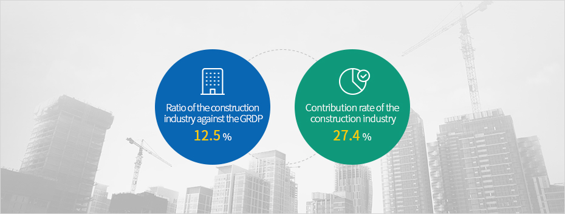

Conventional Key Industries
- Home
- Investment Environment
- Conventional Key Industries
The construction industry has led the rapid growth of Jeju’s economy,
showing a higher contribution rate to the economy relative to its ratio against the GRDP.
showing a higher contribution rate to the economy relative to its ratio against the GRDP.



※ Source: Bank of Korea Jeju Branch (as of 2017)
Jeju’s booming tourism industry and the increase in business relocation and investment have led to an increase in regional incomes and job opportunities. Furthermore, residential land development has expanded the population capacity, resulting in the continued inflow of population into the island and the increase in investment in construction.
FDI into the Jeju area has increased especially for the service industry, and the construction industry has attracted investment with regard to tourism, promoting the rapid growth of the island since 2011.
The construction industry in Jeju is likely to see the further development of infrastructure resulting from the continuous inflow of population and growth in the island’s tourism market, and an increase in the demand for investment in infrastructure improvement which is aimed at better dealing with climate change.